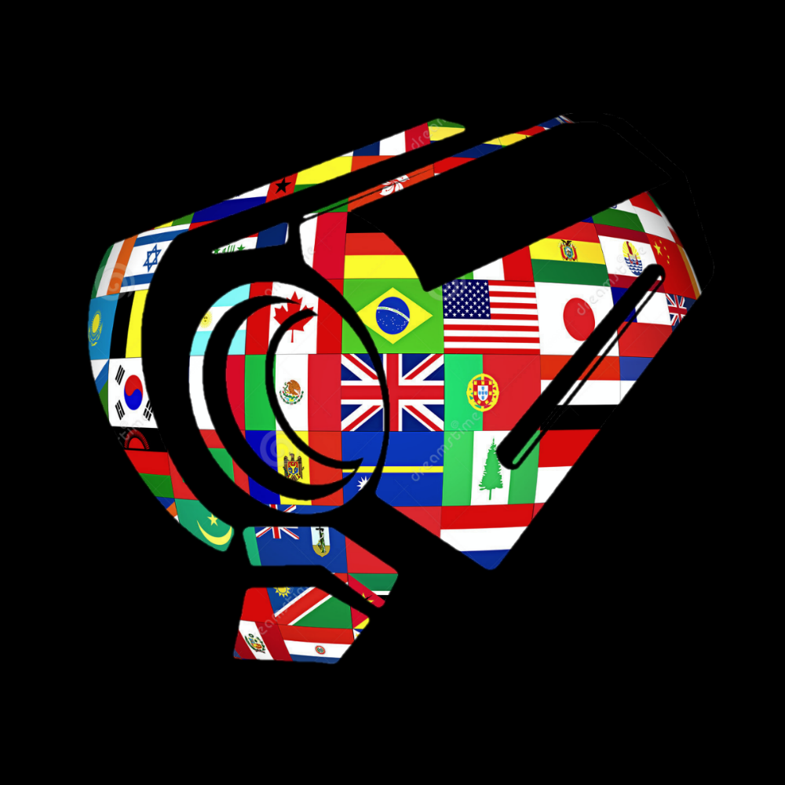

UltrakULL - Short for ULTRAKILL Language Library - is a game modification for "ULTRAKILL" that adds language, localization and translation support to the game.
The base game only supports English in its current state, with official translation support only planned once the game has fully released from Steam Early Access.
In the meantime, I created this mod to allow all players from around the world to be able to experience the game in their own native languages.
UltrakULL currently supports a variety of languages, such as French, Turkish, Russian and Chinese, with more languages currently in development by the UltrakULL translation teams.
Right-To-Left languages, such as Arabic, Persian and Hebrew, are also supported.

ULTRAKILL features voice acting for certain characters. UltrakULL also includes support for this by dubbing over original voiced lines with localized voiced lines.
UltrakULL is currently under active development, with new updates to integrate any new game content into translation efforts.
UltrakULL is available for download from its GitHub repository, or from the UltrakULL Discord.